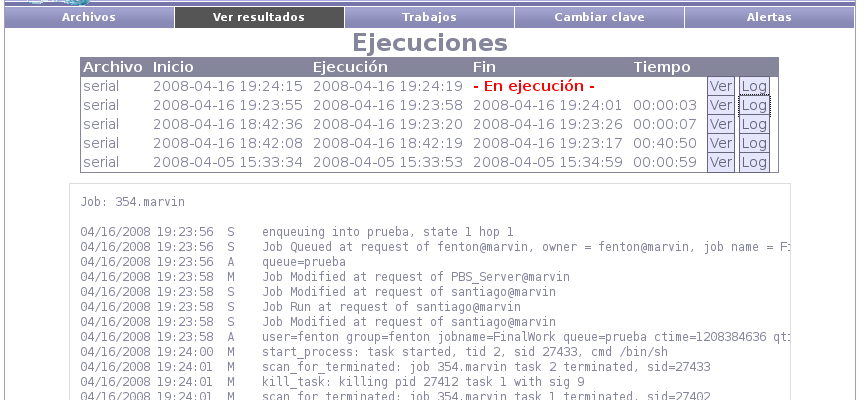

Next: Cambiar Clave Up: Fenton - Manual de Previous: Salida del ejecutable Contents
En cualquier momento será posible consultar por el histórico de ejecuciones. Es importante notar que las salidas de cada ejecutable son dos: por un lado se guarda la salida habitual (salida más salida de error) y por otro se guarda la salida de Torque (el administrador de recursos del cluster).
Presionando el botón ``Ver'' se mostrará la página de salida del ejecutable, mientras que si se presiona el botón ``Log'' se mostrará la salida de Torque en la parte inferior de la página.
